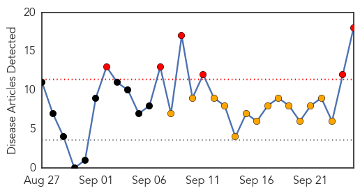
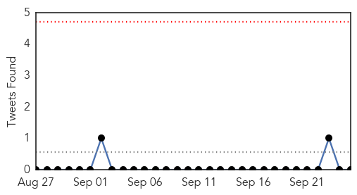
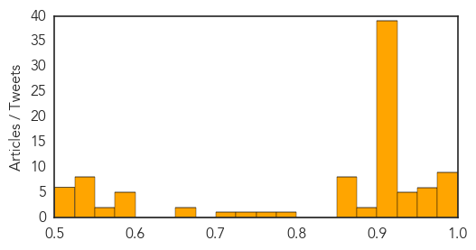

Dengue Fever
30-Day Web Trend
6 alerts, 14 warnings

30-Day Twitter Trend
0 alerts, 0 warnings

Article Locations

Article Confidences

Top Articles:
- 0.988
- Travelers warned of dengue risk
- 0.967
- Brazil Unleashes 10K 'Good' Mosquitoes
- 0.930
- but each bloodsucking bug carries bacteria that blocks dengue fever
- 0.915
- Dengue danger
- 0.875
- Aethlon Medical (OTCBB: AEMD) Announces Dengue Virus Treatment Agreement
- 0.859
- ‘Last week of current month is peak dengue season’
- 0.852
- Brazil releases Wolbachia infected mosquitoes to fight dengue
- 0.814
- Brazil Releases 10,000 Mosquitoes to Fight Dengue Fever
- 0.790
- Brazilian biotech firm's GM mosquitoes to fight dengue
- 0.784
- Brazil Releases 10,000 Mosquitoes to Combat Dengue Fever
- 0.761
- Brazil fights dengue with ‘good’ mosquitoes
- 0.696
- Dengue on decline: Health Minister
- 0.675
- Dengue-blocking mosquito released in Brazil
- 0.623
- Here Comes "Good" Mosquitoes To Fight "Evil" Dengue.
- 0.622
- Brazil releases dengue-blocking mosquitoes
- 0.594
- The Many Ways We're Using Mutant Mosquitos to Eradicate Disease
- 0.589
- GHIT Awards Seven New Grants Amounting To US$15.3 Million
- 0.571
- Dengue threat: Samarth Hospital alleges PMC is harassing them
Top Tweets:
- 0.546
- Flavivirus news: 37 dengue cases reported in Trichy - Times of India: 37 dengue cases reported ... http://t.co/y5CERynWzw pathogenposse
Unknown
30-Day Web Trend
0 alerts, 0 warnings

30-Day Twitter Trend
0 alerts, 0 warnings
Article Locations
Article Confidences
Top Articles:
- 0.995
- B.C. parents urged to watch for signs of enterovirus
- 0.993
- York health official not concerned about enterovirus
- 0.993
- Case of Enterovirus Reported in Md.
- 0.992
- Test results confirm Wyoming presence of Enterovirus D68
- 0.989
- Rare enterovirus spreads to Boston, raises health concerns
- 0.986
- Baton Rouge med center executes vaccination policy
- 0.986
- Our Lady of the Lake Medical Center implementing flu vaccination policy
- 0.985
- 96 patients in Hamilton test positive for Enterovirus D68
- 0.981
- First Case of Rare Respiratory Virus Confirmed in Maryland
- 0.975
- Wisconsin records first case of enterovirus D68
- 0.974
- Hamilton had 96 cases of EV-D68, but virus now declining
- 0.974
- Enterovirus D68 confirmed in South Carolina
- 0.971
- Respiratory enterovirus 68 found in samples from Ohio kids in Columbus, Akron hospitals
- 0.968
- East Tennessee Children's Hospital shares new flu vaccine recommendations
- 0.952
- The truth behind flu vaccine myths
- 0.942
- Enterovirus D68 has spread to more than half of United States
- 0.938
- Health officials in Glen Ridge, Bloomfield keeping eye on new virus
- 0.938
- Legionnaires' disease claims three more lives in Spain
- 0.937
- The Smart Clinics Launch Private Flu Jab Service
- 0.925
- Food-borne illness sees increase in Iowa
- 0.917
- Chicago Tribune
- 0.917
- Chicago Tribune
- 0.917
- Chicago Tribune
- 0.917
- Chicago Tribune
- 0.917
- Chicago Tribune
- 0.917
- Chicago Tribune
- 0.917
- Chicago Tribune
- 0.917
- Chicago Tribune
- 0.917
- Chicago Tribune
- 0.917
- Chicago Tribune
- 0.917
- Chicago Tribune
- 0.917
- Chicago Tribune
- 0.917
- Chicago Tribune
- 0.917
- Chicago Tribune
- 0.917
- Chicago Tribune
- 0.917
- Chicago Tribune
- 0.917
- Chicago Tribune
- 0.917
- Chicago Tribune
- 0.917
- Chicago Tribune
- 0.917
- Chicago Tribune
- 0.917
- Chicago Tribune
- 0.917
- Chicago Tribune
- 0.917
- Chicago Tribune
- 0.917
- Chicago Tribune
- 0.917
- Chicago Tribune
- 0.917
- Chicago Tribune
- 0.917
- Chicago Tribune
- 0.917
- Chicago Tribune
- 0.917
- Chicago Tribune
- 0.917
- Chicago Tribune
Showing top 50 articles...
Top Tweets:
- 0.547
- RT: DYK? Flu season can start as early as October (next week!). Get your flu vaccine now! http://t.co/2AtbXEC2dE via…
- 0.513
- Jornadas sobre Derecho de la información en Argentina: La Maestría de Derecho Comercial y de los Negocios de ... http://t.co/RF3ELW0e2a